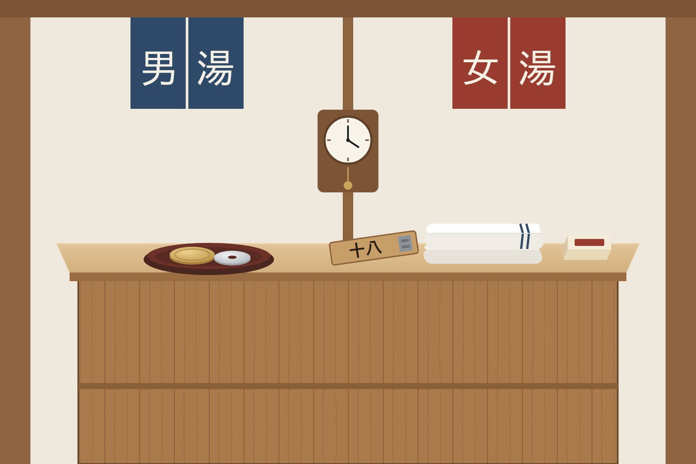

京都には、番台の残る銭湯がまだあります。入口を入ったところ、男湯と女湯の脱衣所のあいだに、一段高い台がある。そこに座る人が料金を受け取り、両方の脱衣所を見渡している。台そのものも、そこに座る人も、番台と呼びます。
最近は入口にフロントを置く銭湯が増えて、番台は少なくなりました。それでも番台での数秒のやりとりには、銭湯という場所の仕組みがよく出ています。
数秒のあいだに、行き来しているもの
番台の前でのやりとりをほどいてみると、あの数秒で、少なくとも4つのことが確かめられています。
料金通い慣れた人は、料金ちょうどの小銭を台に置く。番台の人は数えるまでもなく、足りていると分かる。
持ちもの手にタオルと石けんを持っているか。持っていなければ、番台の人のほうから「タオルは？」と聞く。タオルや小さい石けんは、たいてい番台で売っています。
初めてかどうか顔なじみか、初めての人かを、番台の人はひと目で見分ける。初めての人には、ロッカーの場所や、湯に入る前に体を流すことを、ひとこと足す。
そのあと番台が高いのは、脱衣所を見渡すためです。払い終わったあとも、番台の人は脱衣所を見ている。
顔なじみに対しては、ほとんど何も言いません。言わなくていいことを、お互いに知っているからです。やりとりが短いのは、無愛想だからではなく、共有しているものが多いしるしです。

初めての人のときだけ、やりとりは長くなる
日本人でも、初めて銭湯に来た人には、番台の人がひとこと足します。ひとことで足りるのは、足りない部分がそれだけだからです。湯船に入る前に体を洗うこと、タオルを湯に入れないこと。そのくらいのことは、たいていの日本人が、家の風呂や温泉で、いつのまにか覚えています。
外国から来たお客さんの場合は、足りない部分がずっと大きくなります。順番が丸ごと抜けていて、ひとことでは埋まらない。しかも、そのひとことが通じない。番台の人は、この人がどこでつまずくかをだいたい分かっているのに、それを先に伝える手段がありません。
そうなると、やりとりは2つに分かれます。身ぶり手ぶりで長くなるか、何も言わずに見送るか。どちらも、番台が本来やっていたことではありません。英語の貼り紙があっても脱衣所で立ち止まってしまう人がいるのは、この順番が抜けているからです。そのことは「翻訳では直らない」に書きました。
翻訳するなら、何を訳すのか
番台のやりとりを翻訳しようとすると、まず番台の人のひとことを外国語にすることを考えます。「タオルは？」「先に体を洗ってね」。けれどそれでは、番台の人が話す量が増えるだけで、混んでいる時間には続きません。
顔なじみに対して番台が何も言わなくていいのは、入ってから出るまでの順番を、お客さんがもう知っているからです。短いやりとりを支えているのは、言葉ではなく、共有された順番のほうです。
だから訳すべきなのは、番台のひとことではなく、そのひとことを要らなくしている順番です。やりとりを長くするのではなく、初めての人とでも短いままで済むようにする。翻訳の目標は、そこに置くべきだと考えています。
番台に、指させるものを置く
京都ラボがつくった銭湯の手順案内は、この考えで組んでいます。入ってから出るまでを9つの手順に並べて、4つの言語で出す。QRコードを1枚、入口か脱衣所に貼っておけば、お客さんの手元に順番が出ます。
番台の人がすることは、初めてのお客さんにQRを指さすことだけです。説明はそちらに任せて、やりとりはいつもどおり短いままでいい。
ただし、手順の案内が引き受けるのは、顔なじみなら言われなくても知っていることだけにしています。店ごとに違うことは、番台に残します。たとえば入れ墨（タトゥー）の扱いは銭湯によって違うので、案内の中でも「入る前に受付でたずねてください」としています。そこで交わされるのは、店とお客さんのあいだで本当に必要なやりとりです。
実用情報
- 料金
- 京都府内の銭湯の入浴料金は、府が上限を決めています。2025年4月からは、大人（12歳以上）550円、6歳以上12歳未満200円、6歳未満100円。変わることがあるので、各銭湯の案内で確認してください。
- 持ちもの
- 手ぶらでも入れます。タオルや小さい石けん・シャンプーは、番台やフロントで売っている銭湯が多いです。
- 支払い
- 現金だけの銭湯もあります。小銭を用意しておくと早いです。
- 入れ墨
- 銭湯によって扱いが違います。入る前に番台でたずねてください。
- 写真
- 脱衣所と浴室では撮りません。
- 探す
- 京都府浴場組合の公式サイト「京都銭湯」で、場所や営業時間を調べられます。
あわせて読む
- 01翻訳では直らない銭湯と散髪屋で見た2件を分解した回
- 02鴨川は等間隔になる書かれていないルールが、うまく機能している場所
- 03銭湯のはいりかた（デモ）入ってから出るまでを9つの手順で、4つの言語で